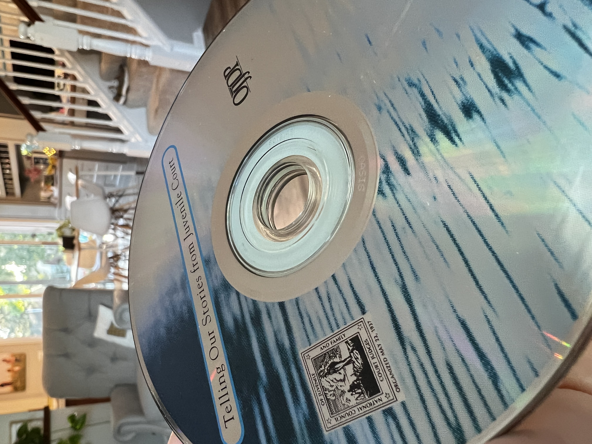

CDs Like Baseball Cards
This summer my two youngest (fifteen and eleven) expressed an interest in getting into vinyl. While I was excited, because I love music and music collecting is dear to me, I saw problems with this plan. Vinyl requires a lot of space for storage. It is finicky and requires some special equipment. As my kids grow older I could see that dorm rooms and small apartments may not be the best place for a vinyl collection. Perhaps that wasn’t the best place to start.
So I suggested CDs. To this younger set, they are still interesting. They are still physical. They still have artwork and liner notes. As an object, vinyl still beats CDs, I think, but they can always progress there if they’d like. Oh, and playing a CD is a much more straightforward process.
To kick start their collection I headed to eBay. I bought tens of discs with their original cases and they shopped through this initial collection. Then I ran into one other place to really build a fast collection and that is random 100-disc CD spindles.
When ordering these, I expected about a 5% hit rate of interesting discs. I was totally wrong. While there certainly weren’t eighty good discs in each spindle, there were many, many worthwhile albums. Some were scratched, but most worked fine. All of us ended up adding lots of them to our collections. It was entertaining and reminded me a lot of opening baseball cards as a kid.
What follows are some pictures of the opening as well as some particularly choice finds. Enjoy!

January 4, 2023